The model-based regularization approach#
Here we answer to the question: How to cure ill-posedness?
We remind that ill-posedness does NOT depend on the algorithm used to solve the problem but only to the data of the problem. In the particular case of image restoration, it is due to the ill-conditioning of the matrix \(A\) of the model. The condition number of A, \(K(A)\) is very large:
Hence, changing the algorithm does not solve the problem.
We can cure ill-posedness: by searching approximate solutions satisfying additional constraints deriving from the physics of the problem.
The information added is also called a priori or prior image information in a statistical setting (that we will see in the following of the course) or regularization in a mathematical setting.
It is added by means of one or more regularization functions, each weighted by a postive constant called regularization parameter.
Direct regularization methods compute the solution of an ill posed inverse problem (imaging) by imposing some constraints on the solution.
The resulting mathematical model can be set as unconstrained minimization or constrained minimization.
General and simplest unconstrained formulation of a model-based regularization method.
where
\(d(Ax,y+\epsilon y^{\delta})\) is a distance in the image space. This term is also called data fitting beacuse it measures the distance between the acquired data \(y\) and the forward model applied to the computed solution \(x\).
It is related with the noise distribution. In the case of gaussian noise:
This is the distance function that we will mostly use in this course.
the function \(R(x)\) is called regularization function since it enforces regularity on the solution.
\(\lambda >0 \) is the regularization parameter which weights the regularization with respect to the data fitting.
This approach is also called model-based since the physical information represented by the matrix A is part of the model and also the noise is modelle in the data fitting term.
It is also possible to have more regularization terms:
(usually there are no more than 2 regularization terms).
We can also have a constrained formulation
The model-based regularization can also be formulated as a constrained minimization:
where \(\delta\) is an approximation of the noise intensity (such as the standard deviation or the noise norm).
Under some assumptions on the functions \(d\) and \(R\), the constrained and unconstrained formulations are equivalent for some choices of \(\delta\) and \(\lambda\). In particular, the value of \(\lambda\) that makes the formulations equivalent is called Lagrange multiplier.
The statistical perspective
We can see the model-based formulation also from a statistical perspective. This is particularly useful when using generative neural networks.
In this perspective, both the physical system and the image to approximate, x, are modelled as realizations of random variables, belonging to specific distributions.
The forward model (or direct problem) is embodied by \(p(y|x)\), the conditional distribution of the data \(Y\) given the unknown image \(X\).
Intuitively, \(p(y|x)\) yells us eveything of how the observations are related to the unknown. This includes bot the deterministic (or physical) properties of the imaging system (represented by \(A\)), and its probabilistic properties related to noise.
In this bayesian setting, we can use a prior model to characterize the likely behaviour of real images.
Some choices for the regularization function \(R(x)\)
2 norm (Tikhonov)
1 norm (sparsifying) - compressed sensing
p norm (p<1) - compressed sensing
others….
All the previous regularizers can be applied both on the image and on its gradient (regularize the gradient).
Tikonov regularization (2 norm)
In the case of Tikohonv regularization on the image we have:
Tikhonov regularization imposes smoothness on the solution.
In the following example on a signal we see the difference of the result obtained for some values of the regularization parameter \(\lambda\) in Tikhonov regularization to remove noise froma signal.
{kind=link}
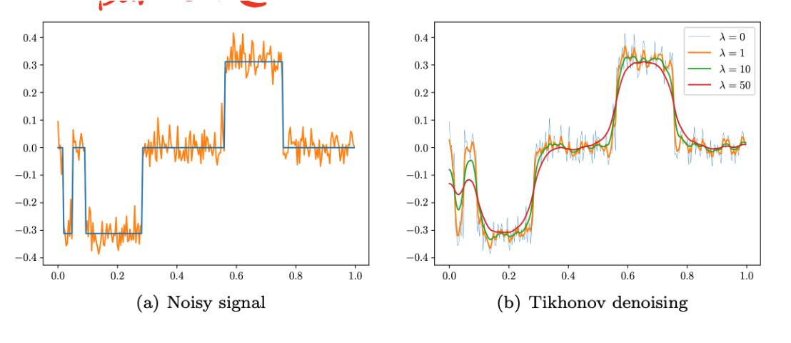
Below are the rsults on an image. They confirm that, increasing \(\lambda\), the images become smoother but the edges are not preserved.
{kind=link}
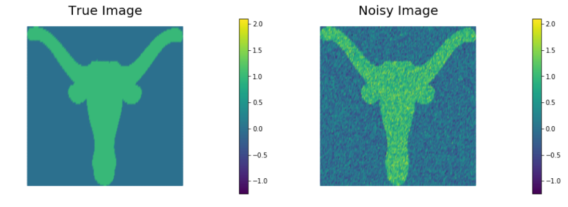
These are the reconstructions obtained with \(\lambda=10^{-4},10^{-3},10^{-2}\), respectively.
{kind=link}
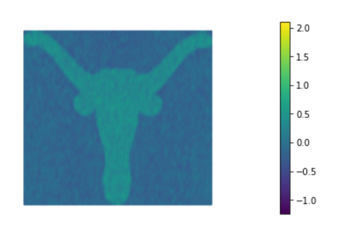
{kind=link}
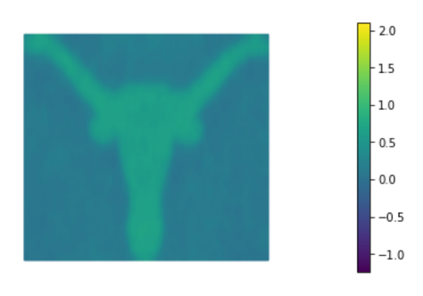
{kind=link}
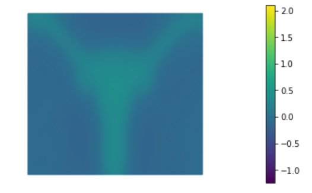
Sparsifying regularizers and compressed sensing
Compressed Sensing is a recent methodology of signal and image acquisition and reconstruction [Candes et al, IEEE transaction on Information theory, vol. 52, 2006, Donoho, IEEE Trans. On Inf. Thoery, vol 52, 2006] when the signal (or image) is sparse in a certain domain.
Sparse representation means that a signal can be represented with a few significant non-zero components.
A sparsifying regularization function is:
in this case we are assuming:
The true image itself is sparse.
That is:
Most pixels/voxels are exactly zero
Only a small fraction are nonzero So the reconstruction is encouraged to contain few active pixels.
Typical examples:
• Angiography: Blood vessels in a dark background.
{kind=link}
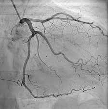
• Micro-CT of sparse structures: fibers, cracks, particles in air.
• Fluorescence microscopy: Bright emitters on dark background.
{kind=link}
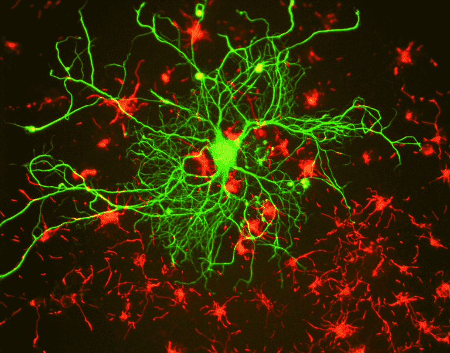
• Point-source imaging: Astronomy (stars in black sky).
It is usually associated to the positivity constraint on \(x\): \(x \geq 0\):
{kind=link}
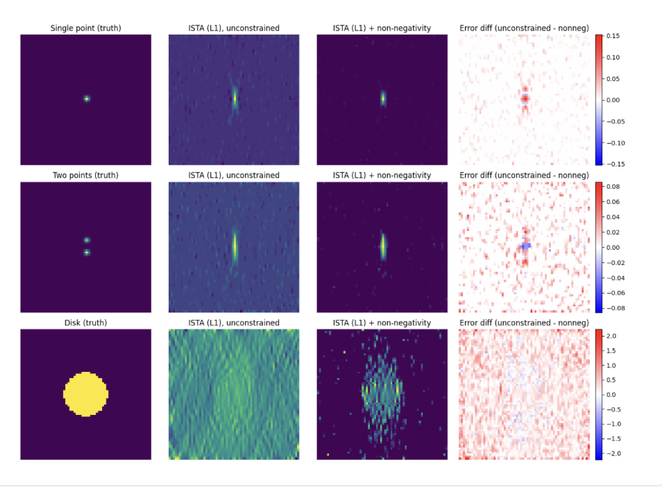
Both 1 and 2 norm regularizers are convex functions.
Another sparsifying regularizer is the p-norm, with \(0<p<1\):
This is a non convex function.
There are other possible reguarization functions. here is a short list …
The gradient of an image
Given an image function \(f:R^2 \rightarrow R\) the gradient of f is a function:
constituted by the partial derivatives of f: \(\nabla f(x)=(\frac{\partial f}{\partial x}, \frac{\partial f}{\partial y})\)
We remind that if the partial derivatives of \(f\) exists in a point \(x_0\) and are continuos in \(x_0\) we say that f is differentiable in \(x_0\).
The gradient domain of an image is very representative of the image itself, since it shows the edges of the objects.
In the discrete setting, the gradient is computed by means of discretization formulas. For example, we can use forward differences:
where \(D_h\) and \(D_v\) are the horizontal and vertical partial derivative, respectively.
In the following we represent for each pixel \((i,j)\) the modulus of the gradient: \(\sqrt{(D_h x_{i,j})^2+(D_v x_{i,j})^2}\)
{kind=link}
Hence we can apply the previous regularizers in the gradient domain:
Tikhonov: $\(R(x)=|| \nabla x||_2^2\)$
To express it in discrete form, we suppose to discretize as:
Total Variation (1-norm applied to the gradient domain) :
continuous formulation:
Using the previous discretization of the gradient of x, we obtain the isotropic discretization of TV:
the p-norm with \(0<p<1\):
The TV regularization assumes that images are piecewise constant. This reflects is sparse gradient, that is a gradient image tht has only few non zeros elements.
{kind=link}
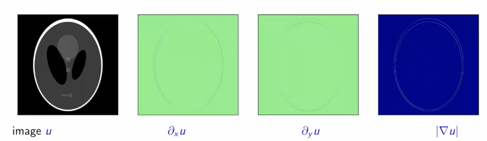
If we plot the values of the gradient of the previuos image (really we plot the \(log(\nabla)\) ) we obtain the black curve of the following plot:
{kind=link}
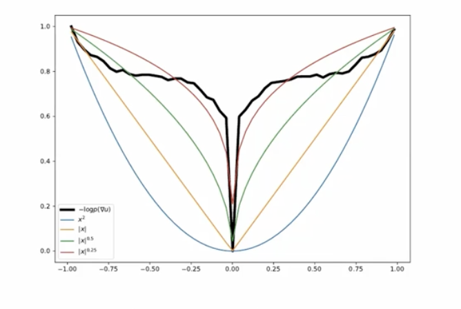
the best approximation curve is \(|\nabla x|^{\alpha}\), for some \(\alpha \leq 1\).
The Total Variation (or Total p_Variation) penalizes the sum of the gradients, i.e. the amount of gradients.
Hence, if the noise is small and the gradient image is sparse the regularization term TV(x) has a small value , whereas if the noise is present and the gradient is less sparse the regularization term has a larger value.
{kind=link}
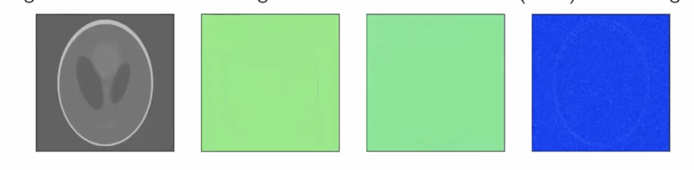
The sparsity in the image and gradient domain:
{kind=link}
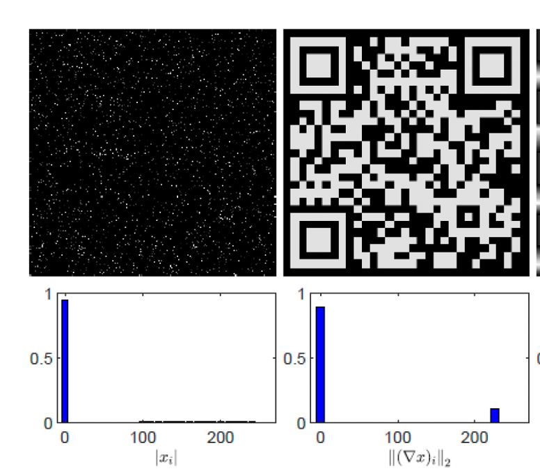
Effects of Total Variation regularization on a signal :
{kind=link}
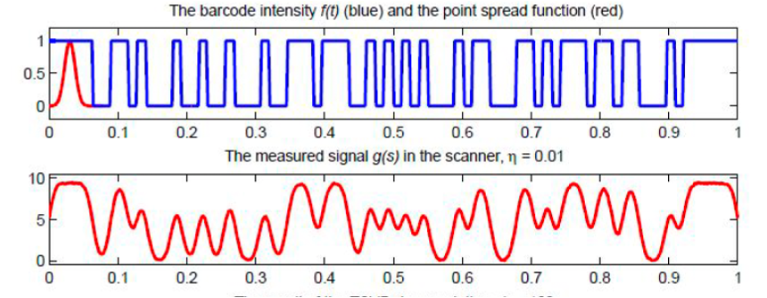
{kind=link}
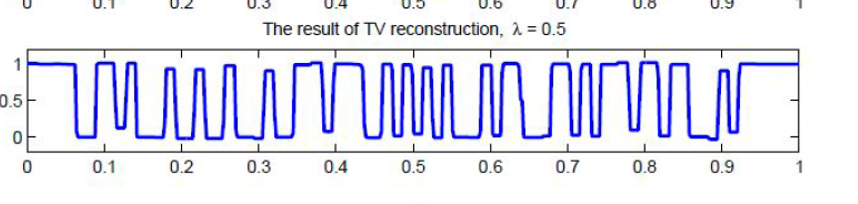
Effects of regularization parameter in TV regularization:
{kind=link}
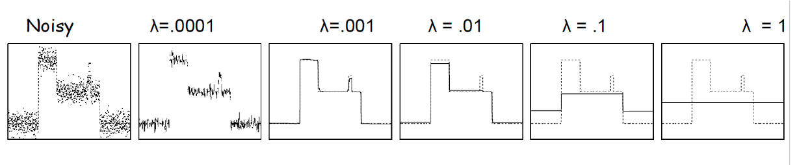
{kind=link}
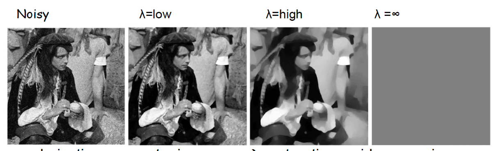
{kind=link}
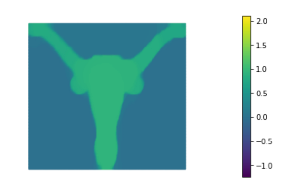
{kind=link}
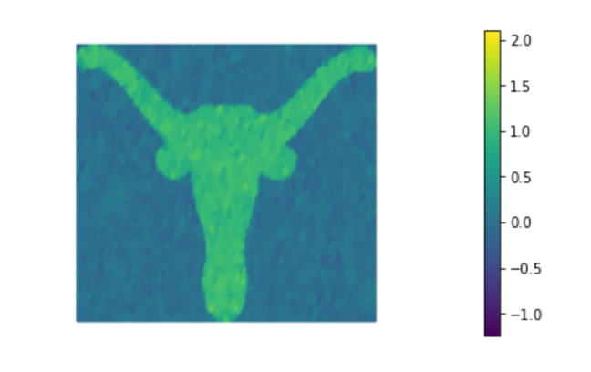
{kind=link}
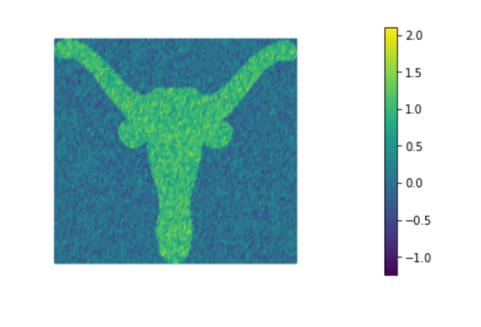
Total Variation vs. Tikhonov regularization:
{kind=link}
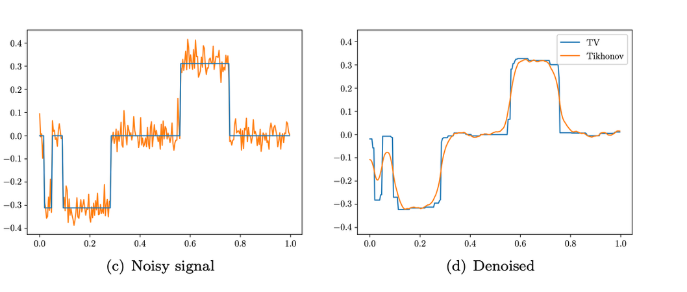
It turns out that TV(x) really is a powerful method, but numerical minimization is more difficult than in the case of Tikhonov regularization; this is because the function to be minimized is no more quadratic (and actually noteven differentiable).
Shortcomings of TV regularization
-staircasing effects: TV tends to favour piecewise constant solutions
{kind=link}
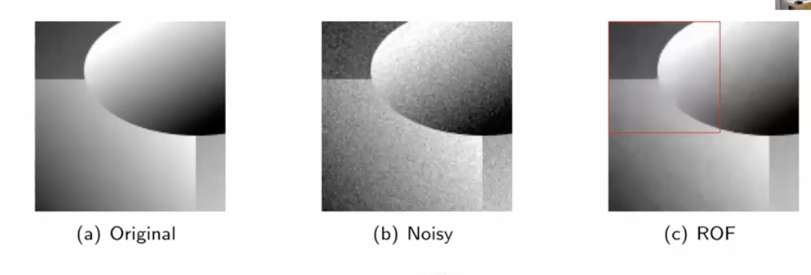
A simple idea to reduce the staircasing effects if to use the Huber function \(h_{\epsilon}(x)\):
Regularization with norm p=0
\(||z||_0=p\) where \(p\) is the number of nonzero elements in \(z \in R^n\)
When applied in the gradient domain, \(|| \nabla z||_0\) is the number of non-zero elements of the gradient of z.
It imposes strong sparsity in the image (or gradient domain).
This is an example of a very sparse signal in the gradient domain.
{kind=link}
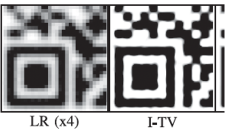
{kind=link}
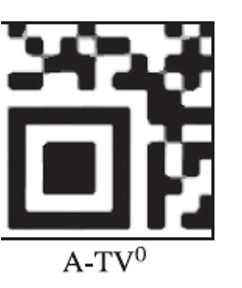
This an example of a natural (photographic) image:
{kind=link}
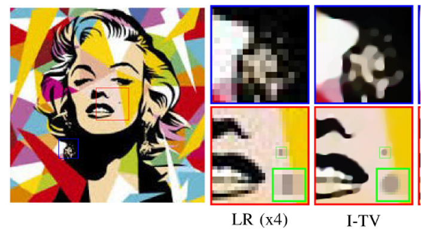
{kind=link}
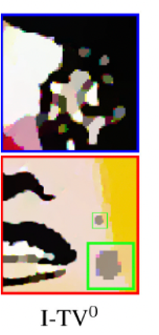
And finally this is an example of the use of \(TV_0\) to perform simoultaneosly super resolution and mask detection:
{kind=link}
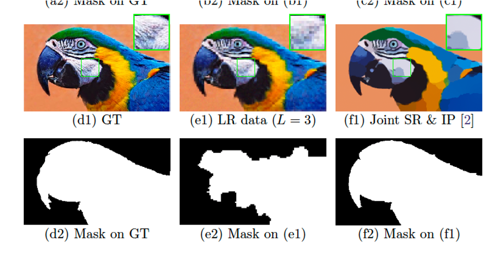
The regularization parameter
The value of the regularization parameter is the most critical setting in the model-based approach.
A Too small value produeces a noisy reconstructed image, whereas a too large value produces an Image with extreme characteristics imposed by the regularization term.
There are some rules for a good choice of the regularization parameter. However they usually requires multiple executions of the minimization problems to finally choose the best one for some predefined criteria. However this is too time consuming in imaging applications.
The criteria can be split in:
Criteria using an estimate of the noise e
Criteria that do not use any information on the noise e
The general idea is that the solution \(x_{\lambda}\) corresponding to the regularization parameter \(\lambda\) should satisfy:
In particular is important to develop strategies whose convergence is as fast as possible.
The Discrepancy principle
The Discrepancy Principle is an a posteriori criterion which applies to an inverse problem modelled by:
Let \(\tau \geq 1\). Choose the regularization parameter \(\lambda\) so that:
hence we choose \(\lambda\) so that the norm of the residual \(||A x_{\lambda}-y^{\delta}||_2=\delta_{\epsilon}\)
where \(\delta_{\epsilon}\) is an upper bound of the noise norm, i.e. \(\delta_{\epsilon} \leq ||e||_2\)
N.B. It requires an estimate of the noise norm \(\delta\).
Heuristic choice of \(\lambda\)
A practice way of choosing the regularization parameter is trial and error.
In many cases, it is possible to create a simulation with data similar to the real one and we use that simulaton to select a suitable value of the regularization parameter \(\lambda\) that we then use on real data.
If we plot a graph of the relative error vs. \(\lambda\), the curve has a shape like the following:
{kind=link}
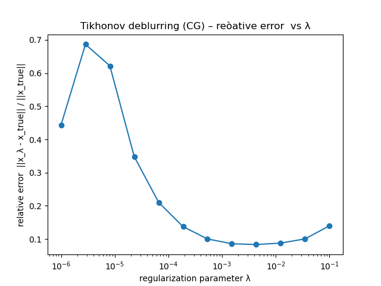
in the sense that there is a minimum corresponding to the value of \(\lambda\) that gives the best reconstruction in terms of relative error.
As we have seen from previous examples, low values of \(\lambda\) do not produce sufficient regularization, whereas high values of \(\lambda\) over-regularize the image producing different effects for the different regularization terms.
It is also possible to have a space-varying regularization parameter, i.e a matrix of regularization parameters of the same size of the image, acting pixel-to-pixel on the regularizer. This is very effective when different areas of the image should have different amount of regularization. On the contrary, it is not easy to compute this matrix, i.e. to choose different values for each pixel, and it is more expensive in terms of memory.
In this case, the optimization problem to solve is:
Iterative regularization
There is another form of regularization of inverse problems, called iterative regularization.
It consists in stopping the iterative method solving the data fit problem:
(in the case of gaussian noise and euclidean distance)
FAR BEFORE its convergence, i.e. perform only few iterations of the iterative method. We will see this approach more deeply when we will analyse iterative methos for the solution of the minimization problem.